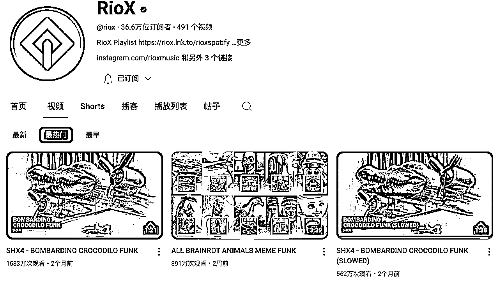
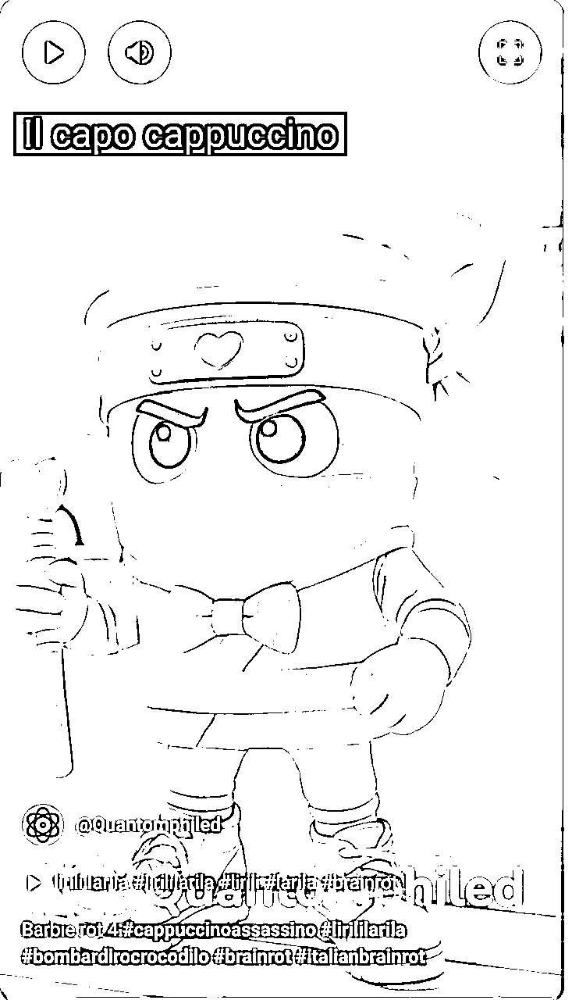
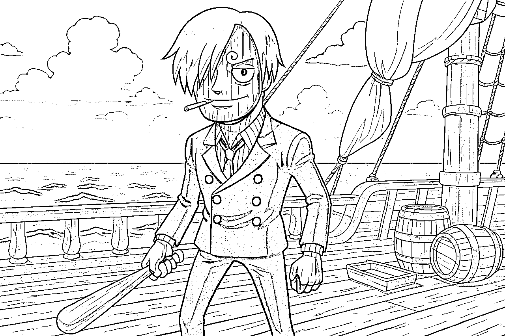

来源：https://rxbnd7239mm.feishu.cn/docx/XYqfdZevWo6DmnxwrjpcJne8nAI
大家好，我是ISLAND，生财传术师 & YOUTUBE【深海圈】教练。
今天跟大家主要分享长视频中近期比较火热的赛道——brainrot，（中文可以叫：美国山海经）这个如果在国内小红书、抖音、b站都可以用“美国山海经”搜到。
写这篇文章最开始的目的是为了给圈友赛道拓展思路，分享我是如何在YouTube深海圈风向标挖掘并实操新赛道；在实际写作过程中，越分享越有一种成人达己的感觉，这个过程其实也是在帮我自己捋顺思路。
在介绍这个赛道之前先给大家看下目前刷到的比较头部的几个频道：
这个频道是一个多月前开始转型做BRAINROT长视频的，他之前是其他题材的。但他第一条就是508W（长视频），他后续所有长视频标题都是以：“|Official Music Video”结尾的，他发视频频率并不高，基本3-5天一条，但目前是几乎条条都爆，最高一条现在是5141W（就是上面截图的3840W），上面的截图没换，但我就想说，截图到现在也就是不到两周时间🤣
他的特点可能在于首发，时间占优势，这一类风格的，你凡是能在油管刷到的，他就是第一个发的，其他都是模仿他的；而且他这个很重要一点用的是动漫的原音乐去改的歌词，这也可能让大部分日漫迷有一种怀旧的感觉吧；其次他的视频整体节奏、画面给人的感觉非常流畅。感兴趣的可以去研究下，我把他视频贴下面大家集思广益去对标吧。
哦对，他同款还自己对标自己弄了同一版本的SHORTS，也有4000W，真的一鱼两吃……
RPM按1.5计算，预估单条长视频收益7.7w刀
这个频道截图是流量很好，目前看还没有后面哪几个频道跑得快，没有嫌弃的意思，只是想说，长视频就是需要有耐心，他并不是一个平稳的推流，也不一定爆的就是哪个点，大家还是要平常心些
这个频道中目前最高纪录是2315W（上图中818W这条），这条BARBIE风格的，可以说没什么技术含量，虽然是视频，但风格也没有那么统一，整体也没什么故事性，就是各自视频拼接的结果
RPM按0.6计算，预估单条长视频收益1.4w刀
这个频道目前看应该是停更了，还隐藏了最新一条（没看懂原因），但并不影响他第一条长视频的战绩3666W（上图2910W的那个），这条视频可以说更没有什么技术含量，除了时间优势一个月前，再就是踩中了比较洗脑的FUNK风格音乐，这个视频连故事都算不上，单纯的SHORTS和图片拼接，配以洗脑夸张音乐和动画特效。
RPM按0.6计算，预估单条长视频收益2.1w刀
这个频道只更了三条长视频，其中4周前的一条，3128W，视频很有故事性，3分钟的AI长视频来说，算是很精致了，至少他比上面图片拼凑那个有技术含量多了😂，就是你看上去很有电影的既视感，还有很多镜头的处理，又是纹身又是嘻哈那种风格，很是美国那种街头文化风格。
RPM按1.5计算，预估单条长视频收益4.7w刀

还是老样子，截图是我两周前截的，目前最好一条数据是3060W（上图中891W这条），一样发布时间优势，FUNK音乐风格，很洗脑，剪辑手法也简单，纯图片是真的纯图片❗ 魔性的动感洗脑音乐。
RPM按0.6计算，预估单条长视频收益1.8w刀
这种是另一种长视频的代表，解谜类。思路不难，只不过有点废手😁，就是一种互动感，好些观众喜欢这种互动感、挑战的感觉，我自己看了也觉得有意思。就是给个人物声音、给个人物的眼睛、给个人物的脚、给个人物固定的场景等等，与观众互动答题。
这类视频油管上也有很多很多变种，比如长视频是这样的，改成SHORTS了，就是真人主播猜，半屏模式；还有虚拟人物猜的，变种很多，也有很多花样，我们今天主要还是说长视频。这类视频还有个特点就是，它通常都很长，相较于前几类频道长视频都是1-3分钟，这种解谜类的通常8分钟甚至更长，这就导致了它能贴广告，RPM会高，所以如果搞出来量，也不一定比上面的差。
RPM按3.0计算，预估单条长视频收益4.1w刀
最后一类，本来不想说，因为这个在我看来有点难，我也解释不明白，这个频道就像他的名字一样，都是3D的人物，不是我们简单的AI工具可以复刻的，但当然大家集思广益，一定有很多圈友懂这个技术的，他的每个长视频都很长，20分钟左右，故事性也很强，故事也都很有意思，我就不贴视频了，贴个链接大家自己研究吧。
但这个频道好就好在，他故事很吸引人，平均2天一更，长视频能够保证每条300W，我要是观众我可能都会加会员，他会很有粘性，因为确实质量高。
RPM按4.0计算，预估单条长视频收益1.2w刀
https://www.youtube.com/@Hornstromp3D/videos
以上就基本是油管能够搜到的绝大部分BRAINROT的长视频爆款频道，更多有待大家一起去开发啦😁
rpm是按平均时长和赛道大致收益粗略估计，只少不多，看到这儿的你怎么想，我觉得，我们要求也不高，一个月一篇爆款足以(^-^)
还有一类赛道我们在文章下面说，也是我自己做得比较多的一类。⬇️⬇️⬇️
brainrot（美国山海经），这也是之前Gary教练发的风向标赛道之一，我最开始关注这个赛道是因为在养新号的过程中无意刷到的，我就觉得很有意思、很魔性，他们的名字有的是意大利语，有的是印尼语，有的名字感觉得有50多个字母，就看油管上人一直在做读名字挑战，非常有趣，但是因为它不是英语，更难理解些，而且brainrot直译就是脑腐、脑洞，就是感觉没点幽默细胞都理解不了它们的存在。
你可以通过#brainrot在油管、tiktok上搜索，有很多长视频、shorts近期都有爆款。
下面我先简单介绍下这些人物吧，他们一般是动物与动物、动物与物体结合的，他最开始火应该是25年的1月份在tiktok火起来的，后来是在25年4月中旬，在油管上开始出现各种爆款，才开始在油管上走红。
https://en.namu.wiki/w/Italian%20Brainrot/%EB%93%B1%EC%9E%A5%20%EC%BA%90%EB%A6%AD%ED%84%B0
这是一个关于brainrot中一部分角色简介，大家有兴趣可以看下，或者自己在油管、论坛上搜索也行。
Tralalero Tralala
（ 鲨鱼、三只脚、蓝色耐克运动鞋）
Bombardiro Crocodilo
（鳄鱼、轰炸机）
Tung Tung Tung Tung Tung Tung Tung Tung Tung Sahur （木棍人）
Lirilì Larilà
（大象、仙人掌身体、棕色拖鞋、闹钟）
Boneca Ambalabu
（青蛙、轮胎、人脚）
Brr Brr Patapim
（大树）
Ballerina Cappucina
（咖啡杯头、女孩、芭蕾舞）
La Vaca Saturno Saturnita
（牛、地球、人脚）
Capuccino Assassino
（卡布奇诺、忍者）
Frulli Frulla
（鸟、墨镜、咖啡、沙漠）
请恕我文盲，我真不知道它是什么鸟😂
这些只是他们中非常非常小的一部分相对主要人物，但有时爆款可能就是一些小众人物也说不定。
长视频我自己的数据一般差不多的，也得一周到10天能破万，虽然数据并不怎么好，但已经能够证明这个类型的长视频赛道相对较容易，也是最近有量的赛道，大家有兴趣的可以关注、尝试；我就抛砖引玉吧
下面是我的几条brainrot长视频的数据：
单条brainrot长视频收益（目前我也是刚开始探索中，但赛道足够大，有很大发挥空间）
因为这些人物角色都有固定的搭配或者形象，目前我找下来，这么多生图软件中，应该是只有gpt4o可以很完美的复刻，但是gpt4o有的时候因为ip原因会卡你，反正我以前用都没事，最近要正经使用了，花钱了，反倒出问题一直卡，我因为这个事前后跟他们客服沟通了不下十次，也没说出所以然了，我后来都放弃治疗了。（虽然后面也好了，但反正看需要什么图，他与N8N可以互补同时使用）
这里要感谢下李香君教练，他的工作流真是救了我，具体怎么搭n8n工作流太复杂了，大家看君哥帖子吧。感兴趣的圈友可以学习下……
我的工作流大概长这样，这个很基础的用法，对很多大佬来说，太基础了，真的搭好了不复杂
美国山海经简单风格转换如下图所示，我在后面会分享我写的提示词。
左边原图形象Trippi Troppi

右边是工作流出的效果图
然后简单配个音乐，或者直接去对标找做好的，把它音频下载下来，放进剪映或者capcut一拼，很简单。
# 提示词：生成写实风格的创意风化效果图像
## 基本要求
基于输入的原图角色，生成一张**写实风格**、带有**创意性风化效果**的图像。
在图像中，角色应与原图保持一定的关联性，保留其核心特征（如轮廓、标志性装饰、体态比例等），但允许对角色的**形态、动作、姿态**进行**创意化调整**，不必完全一致。
---
## 风化效果
在**写实画风**的基础上，添加**真实且富有创意的风化效果**，表现方式包括但不限于：
1. **裂纹细节**：
- 角色表面出现真实的干涸裂纹，仿佛古老木偶或雕像因时间侵蚀而龟裂。
- 裂纹深浅不一，部分裂缝中可见植物或青苔生长。
2. **青苔覆盖**：
- 角色的表面被绿色苔藓覆盖，部分区域长出细小的藤蔓或菌类。
- 青苔在角色的关键部位（如肩膀、头部、四肢）自然分布，与环境融为一体。
3. **沙土侵蚀**：
- 角色身体被风沙侵蚀，表面粗糙、残缺，部分区域显露出内部结构或骨骼。
- 沙土堆积在角色的脚下或身体周围，表现出时间的沉淀。
4. **石化形态**：
- 角色整体或部分变为石化雕像，表面粗糙、布满裂痕或剥落的痕迹。
- 石化区域与未石化部分形成对比，增加视觉冲击力。
5. **骨骼外露**：
- 时间侵蚀后，角色身体部分解体，骨骼显露，呈现出真实的解剖结构。
- 骨骼表面可能附着青苔或沙土，进一步增强风化感。
6. **奇异生长**：
- 角色的身体表面长出藤蔓、绿毛或菌类，表现出自然与生命的交织。
- 某些裂缝中透出微弱的光芒，增加超现实的艺术效果。
---
## 主体表现形式
在保留原图角色**核心特征**的同时，允许对主体形态进行创意化调整，具体表现形式包括：
1. **原人物形象带有风化效果**：
- 在角色的原始形态上叠加裂纹、青苔、沙土或石化效果，整体仍保留其原始轮廓和姿态。
2. **形态变化**：
- 用骷髅、骨架或石化雕像代替原图角色。
- 角色部分解体或残缺，例如四肢被侵蚀、头部或身体部分崩塌。
- 创意化变形，例如角色表面长出植物或裂缝中透出光芒。
3. **动态姿态调整**：
- 改变角色的动作或姿态，使其更具表现力，例如：
- 角色跪地或倒地，展现出一种时间侵蚀后的无力感。
- 角色挣扎或定格在某个瞬间，增加叙事性。
- 角色与周围环境互动，例如被植物缠绕或部分埋入沙土中。
4. **角色与环境的关系**：
- 角色与环境自然融合，例如：
- 身体部分融入石化地面或遗迹中。
- 被自然元素（如沙漠、丛林、废墟）侵占或覆盖。
确保即使形态发生变化，仍能通过**标志性装饰、轮廓、身体比例或其他独特细节**辨认出角色与原图的关联性。
---
## 场景与氛围
- **场景设定**：根据角色特点设计与风化效果相符的场景，例如：
- **荒漠**：角色部分被沙土掩埋，背景是漫天黄沙和破败的地表。
- **废墟**：角色置身于废弃的古老建筑中，周围充满破碎的石柱和坍塌的墙壁。
- **丛林**：角色被茂密的植被包围，地面覆盖青苔，空气中弥漫湿润的气息。
- **异星遗址**：角色处于一个奇异的星球上，周围是超现实的地貌和遗迹。
- **色调**：选择符合写实风格的自然色或艺术张力较强的色调，例如：
- **沙黄色**：表现时间的侵蚀和荒凉感。
- **深绿色**：突出自然侵占和生长的力量。
- **灰白色**：增强石化和遗迹的厚重感。
- **冷色调**（蓝绿光影）：增加神秘感和艺术性。
- **氛围**：
- 孤独、末世或远古感。
- 时间沉淀的厚重感，角色与场景共同诉说时间的故事。
- 整体表现衰败、神秘或遗迹感，例如：
- “一个被时间遗忘的角色在荒野中风化”。
- “角色与周围环境融为一体，成为自然或时间的一部分”。
---
## 创意性要求
- **动作与姿态**：允许对原图角色的动作姿态进行调整，例如：
- 角色跪地或倒地，表现出一种时间侵蚀后的无力感。
- 角色面向天空或远方，表现出时间的流逝与孤独。
- 角色与环境互动，例如：
- 被植物缠绕或部分埋入沙土中。
- 石化裂缝中透出微光。
- **叙事性**：通过风化效果和场景设计，传达一种故事感或情绪，例如：
- “一个被遗弃的角色在时间长河中逐渐风化”。
- “自然侵蚀中，角色的生命与死亡交织成奇异的形态”。
---
## 示例创意
1. **原图角色是战士**：
- 战士的盔甲布满裂纹，身体部分石化，手中的武器被青苔覆盖。
- 战士跪倒在废墟中，盔甲与地面融为一体，仿佛成为遗迹的一部分。
2. **原图角色是动物**：
- 动物的骨架部分显露，身体表面长满青苔或藤蔓。
- 动物倒在沙漠中，沙土掩埋了它的身体，风化的痕迹清晰可见。
3. **原图角色是机械人**：
- 机械表面锈迹斑斑，部分零件脱落，内部长出植物。
- 机械人倒在地上，眼中透出微弱的蓝光，周围是废弃的科技废墟。
---
请根据以上描述，结合我提供的原图角色，生成**写实风格**的创意风化效果的概念描述，突出角色的核心特征与独特的风化表现形式，并赋予图像**叙事性**与**艺术感**。
上面这段提示词，是我用ai工具调过的，如果你也用工作流的话，可以引用，或者参考，直接用gpt4o的可以忽略，当然他们各有优缺点；而且我这个提示词你可以拿来做基础去让AI改，太多风格版本可以玩了
gpt4o的话，建议配合智能体（这个我具体没做，但比如智谱清言、coze等都可以，就很基础功能，生财有很多帖子，我就不讲了😊），用智能体的好处就是如果你要生成固定风格的形象，生成一批但每个还要有区别，这种创意就让ai帮你想，避免每次自己手搓。反正都可以看自己使用方便。
这个看上去很简单吧，这一套下来就是生图算是最难的，当然这么简单，你可能会想竞争很激烈吧，那我们得换花样，首先brainrot动物种类非常繁多，那我们就会有很多种选项。
这个类似的我还做过乐高风格的
原图形象
转换后的乐高风格
博物馆化石骨架风格的
原图形象
转换后的博物馆化石风
乐高版风化破败风格的
原图形象
转换后乐高风化版
类似像素风格的
原图形象
转换后像素风格
吉卜力风格的
原图形象
转换后风格
还有很多我没做过的但刷过的赛道，他们都异曲同工，按照一定规律转换风格，比如：
我直接贴链接，大家自己研究吧。这个是SHORTS，是8个视频拼的，但你拆开连上是不是就是一个长视频了。
https://www.youtube.com/shorts/uol3r8fRA_I
截图：
恐怖僵尸风格最近也挺火的，有很多号跑出来量的，实际操作并不难。
视频链接⬇️⬇️⬇️
https://www.youtube.com/watch?v=NTP7ZRvA0GI
https://www.youtube.com/watch?v=cnw6iiARUjI
https://www.youtube.com/watch?v=z-V7sUqSHOs
截图：
视频链接⬇️⬇️⬇️，这种拼凑的，是可以shorts与长视频自由切换的。
https://www.youtube.com/shorts/ZVOs0HRGwtI
截图：
视频链接⬇️⬇️⬇️
https://www.youtube.com/shorts/prDZxNCTheI
截图：
视频链接⬇️⬇️⬇️，芭比风格也很火爆，少女心爆棚应该都会喜欢吧
https://www.youtube.com/shorts/WKUUut8YuLw
https://www.youtube.com/watch?v=gxnucvivW1Y
截图：

视频链接⬇️⬇️⬇️
https://www.youtube.com/watch?v=3NEDzC3ODsM
截图：
视频链接⬇️⬇️⬇️，
https://www.youtube.com/watch?v=RacFJGWpp4M
截图：
上面这只是其中一种，目前我看到的简单的类似操作的还有：一个人物从婴儿到未来的样子，比如下面这组图
（下面的组图是按照年龄从小到大，再到未来幻想这样的顺序做的）

这个人物就是两个一起出现的，一个盐罐一个蜂蜜罐。
名字：Garamararamararaman dan Madudungdung tak tuntung perkuntung
这个其实也是风格转换的变种，只不过每次集中在一个人物身上变换，这个后续还有其他变化，比如我这个最后是科幻机械结尾，有的还会再加上风化、头骨没落的、宇宙中意识流样子结尾，或者还有加上翅膀，飞上天堂的那种，又混搭宗教耶稣风格的。
下面是我随便找的几个频道，其实还有很多，大家多刷才会有新思路：
https://www.youtube.com/watch?v=GUYpDcH89QU
https://www.youtube.com/watch?v=cBvMQJVkjqg
https://www.youtube.com/watch?v=1rA_LWHSR2g
视频链接⬇️⬇️⬇️
https://www.youtube.com/watch?v=piZtp081PIY
从公元前到中世纪，到二战风
视频链接⬇️⬇️⬇️
https://www.youtube.com/watch?v=9jgaMLOP1Ho
这是今天刚刚刷到的，给你们尝鲜吧
账号1链接:
https://www.youtube.com/watch?v=SkiKcb1uZbs
虽然目前还没爆，但很有意思，又给年龄赛道增加了新鲜感。
主要元素：tungtungtung sahur的年龄变化，与卡布奇诺小姐的爱情，出轨，决斗，耶稣。
截图：
账号2链接:
https://www.youtube.com/watch?v=miuEUaYMNh8
这个号小爆，跟上面的一样，tungtungtung的年龄变化+爱情+出轨，但故事情节完全不同，真是个有意思的赛道。
截图：
这个之前Gary教练的风向标有提过，一个经典日漫的风格转换，他那条长视频现在已经有5000多万播放，是上面我第一个提到的赛道头部长视频。
视频链接⬇️⬇️⬇️
https://www.youtube.com/watch?v=KZoipAb2fo4
但我自己复刻下来，当然我的这个技术有限，我最开始也不是用的人家的原音乐，只是ai复刻的音乐，而且对日漫我本身不太了解，只是大概知道动漫的名字或者简单人物，所以肯定还是没有模仿到精华，熟悉日漫的可以尽情尝试。
这个是海贼王版的，⬇️⬇️⬇️
原图形象

转换后的动漫固定人物风格
原图形象
转换后的动漫固定人物风格
下面是我简单仿的一个长视频，做的很粗糙，大家凑合看下（也可不看😂）
这是火影忍者版本的⬇️⬇️⬇️
原图形象
转换后的动漫人物形象
原图形象
转换后的动漫人物形象
这是哈利波特版本的⬇️⬇️⬇️
原图形象
转换后的电影人物形象

原图形象
转换后的电影人物形象
下面还有一些我自己发掘的赛道，还没有来得及研究，看上去感觉也不太复杂，大家可以参考
这是虚拟人物讲解的（gary教练之前的风向标）这个账号是shorts，你改成横屏左右版的，不就是长视频了么
视频链接⬇️⬇️⬇️
https://www.youtube.com/@BrBrBlue/shorts
视频链接⬇️⬇️⬇️
https://www.youtube.com/shorts/bflD45bWDdc
因为这个整个brainrot动物中，只有一个卡布奇诺女孩，所以就会有很多故事可以做。这个只是刷到的一个，就是那种木棍人很瘦弱，被卡布奇诺女孩和健壮的特拉拉鲨鱼一起嘲笑，然后木棍人开始努力、健身，最后焕然一新出现在卡布奇诺女孩面前，让人惊掉下巴。（这与之前的猫故事、狗故事异曲同工，被嘲笑，挣钱翻身，差不多思路）
故事类有很多，通常恶搞的、感情纠葛的等等，我就不一一列举了。
游戏类我自己还没有试，因为我自己几乎没什么游戏水平，打也打不好，各位熟悉这类游戏的可以一试，流量也都很好。
视频链接⬇️⬇️⬇️
roblox
https://www.youtube.com/shorts/ezijKduPj5E
https://www.youtube.com/shorts/mXs1i-TZXwI
https://www.youtube.com/watch?v=n7UeEGKZ6oM
Incredibox
https://www.youtube.com/shorts/fUXlmS21DDo
https://www.youtube.com/shorts/SPU1TLfhWLk
https://www.youtube.com/shorts/Wtq6NeNqzsw
https://www.youtube.com/shorts/xItLAUYcOqc
https://www.youtube.com/shorts/RaiXb25_JzY
https://www.youtube.com/shorts/XXjH5tFDYjs
Minecraft
https://www.youtube.com/@Craft1-1
写在最后：
长视频赛道，我们都还在不断挖掘中，长视频顾名思义，它就是有长尾流量，需要我们对他有耐心，它不像shorts那样流量马上就给到位，但对于我们想长期在youtube深耕的各位圈友，稳扎稳打，不断地优化视频，不要焦虑，不断地提升自己的能力和心力，保持在场，就是在正确的道路上，时间会给你应得的回报。
赠予大家，也写给我自己
感谢YouTube生财深海圈 方波妮总教练、感谢 Gary曹淦总教练的指导
感谢，生财七天可爱多老师对帖子的指导💗💗💗